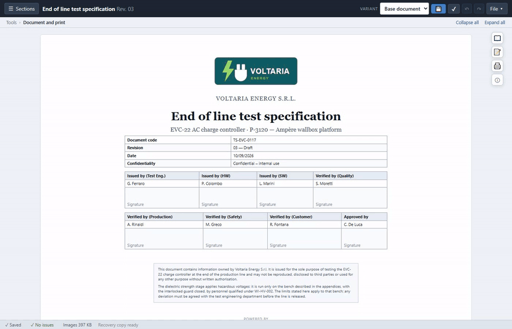
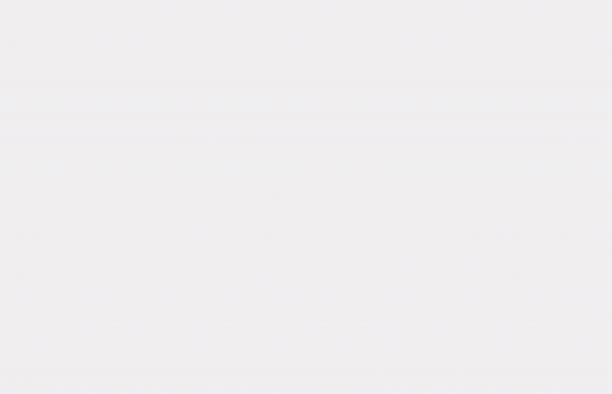
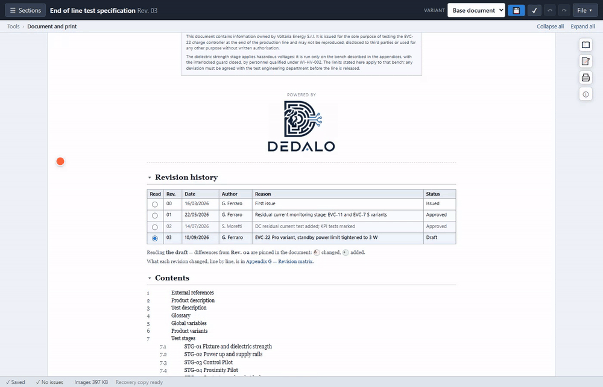
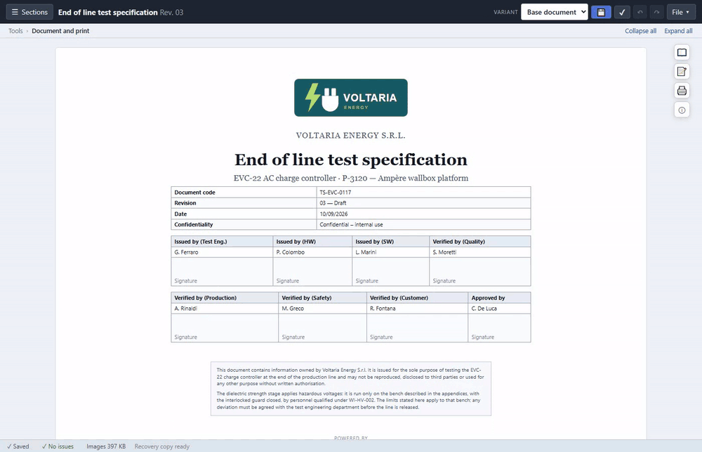

FOR WHOEVER WRITES SPECIFICATIONS · 60 SECONDS
Your Word specification ages badly. This one doesn't.
You're not being asked to change how you work: it's still a file, still opens with a double click, still prints the same. Only what wastes your time today — or makes you get it wrong — changes.
01 — MOVE A STEP
In Word, «see Step 12» is just text. If you renumber, you fix it by hand — everywhere it appears — or you forget it.
Three product variants = three Word files to keep aligned by hand.
→
One document. The differences are visible; each product prints on its own.
Word's «Compare documents», on a table, is unreadable.
→
A revision matrix says what changed, where, how — coloured by kind.
A limit with no tolerance, a reference to a step that's gone: Word never notices. Testing does — too late.
→
It tells you before you print.
NOT A MOCKUP — THE REAL APP

Hover a code → a crop on the exact point. Scroll and see every other point on the whole board.

Hover a blue value → what it's worth in every variant, without opening any other file.

Open a past revision → impossible to mistake it for the current one: red banner, watermark, one click back.

Reading mode → a contents panel on the right follows where you are on its own, chapter by chapter.
It's not a program to learn. It's the same file as always — open, edit, print — that this time doesn't leave you alone with the mistake.